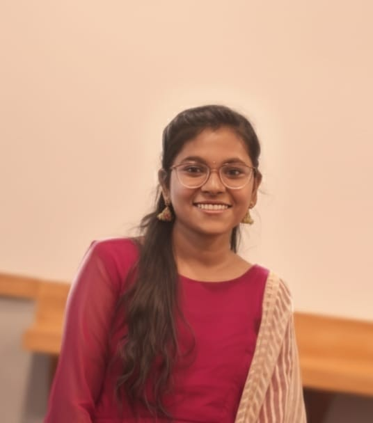

I am an ECE graduate with skills in HTML, CSS and Basic Python. I enjoy learning new technologies and building useful applications. My strengths are communication, adaptability and listening skills.
Here are some technologies: